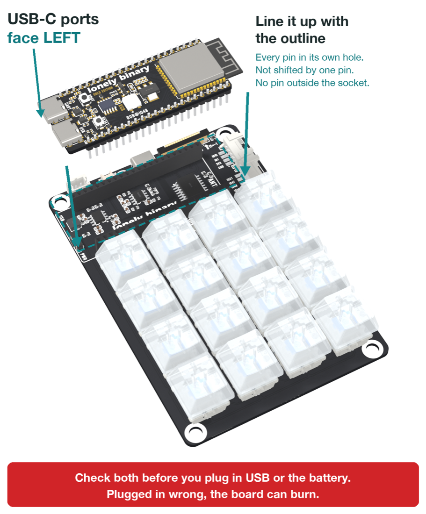

TinkerPad Web Installer
Put a ready-made program on your TinkerPad straight from the browser. No Arduino IDE needed.
Before you plug in: check the ESP32-S3 board
Plugged in wrong, the board can burn.- Direction: the two USB-C ports on the ESP32-S3 board face the left edge of TinkerPad.
- Alignment: every pin in its own hole. Not shifted by one pin, no pin outside the socket.
- Only connect USB or the battery after you have checked both.

How to install
- Use Chrome or Edge on a computer (Windows, macOS, Linux or ChromeOS).
- Plug a USB cable into either USB-C port on the ESP32-S3 board.
- Click Install below and pick the board in the window that opens.
It shows up as
USB JTAG/serial debug unitorUSB Single Serial. - Wait for the progress bar to finish. The board restarts on its own.
Nothing in the list? Hold BOOT, tap RESET, let go of BOOT, then try again. On Windows the UART port may need the CH340 driver.
VoiceBoard
A family voice message board. Twelve people, one key each. Several boards keep each other in sync.
This browser cannot install. Use Chrome or Edge on a computer.
Open this page over https to install.
Installing asks whether to erase the board first. Erasing also deletes the messages stored on it; skip it to keep them.